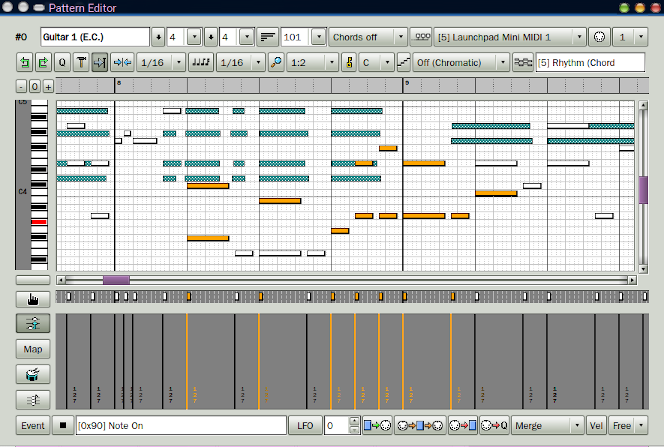

-
Main top bars.
These bars allow setting the pattern title, time
signature, length, chord-generation, output buss and channel,
snap, note length, time zoom, and much more.
-
Time line.
Provides for vertical zoom and the time
markers "L", "R" (for sub-looping), and "END".
The L/R markers can be moved;
a starting position can be set.
-
Keys pane.
Piano keys at left show the current note,
the scale; a click to previews notes.
Right-click cycles through the note-name style.
-
Piano roll.
Shows the notes in a track and a progress bar
while playing.
Notes can be recorded from a MIDI controller or
be painted via the mouse.
Copy/paste and note modification are supported.
-
Left buttons.
These support painting note, transposition setting,
note-mapping, drum mode, chord-generation, and changing the
events shown in the data pane.
-
Event pane.
This pane shows only the exact timing of selected events
(e.g. Note On vs. Note Off).
Movement and deletion are supported for non-note events.
-
Data pane.
The data pane shows the selected event plus their magnitude.
By dragging the mouse, the height of each event can be
modified.
|
-
Bottom bar.
The bottom bar allows seeing and selecting events
in the other panes, provides a low-frequency
oscillator for adjustments, a repetition count for
Live mode, buttons for arming, MIDI Thru,
recording, style of recording, and note velocity.
|
|

|
|